The one where I bought Audemars Piguet watch
(just kidding)
Charting the bibliography map
For our dissertation session, we were to present the readings we've done so far in a "map" or "diagram" of some sort, linking the key ideas together. I did this pretty last minute... I even added "the Good Place" as a reading even though it was clearly not one to look like I did more (sorry Shu Min) but thankfully had booked a later consultation slot. I realize that a common theme was that I was always rushing for time while doing a project on time... something to reflect upon for me...
I gathered the few books that I read: The Silent Language, Einstein's Dreams, Slow Technology Reader and Time Matters (which turned out to be not so relevant). I wasn't very satisfied with this outcome as I felt like I read wayy too little books; also it became really messy. Access my bibliography map here (at your own risk as the FigJam is a little Messy™.)
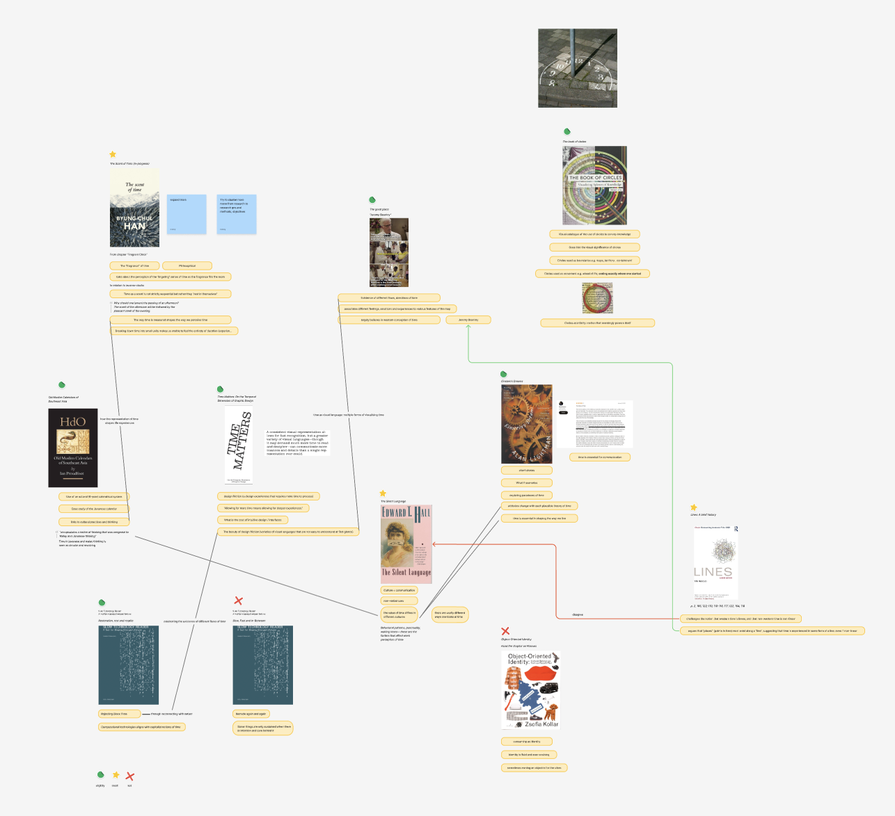
But in defense of myself...
There was really little time to do my bibliography map as I was doing something else: plans for the 30 other experimentations! I focused on my main question: "Capturing the beauty in subjective experiences of time (also not neccessarily beauty), but the vastness of it.
Sub-topics of this were:
Time surrounding us (Clock, "real" time?)
Time IN us (our biological time; circadian rhythms)
Time FROM us (perceived rhythms)
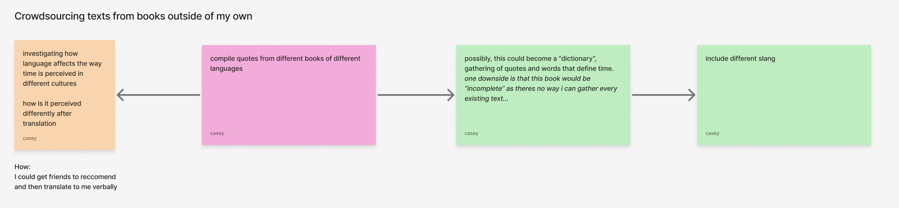
This was the plan for gathering quotes from books written languages: gather reccomendations from friends, beg them to translate these books for me, and perhaps compile all the quotes into a dictionary. Unfortunately, since it was a printed matter, it felt very "final", especially since there was an infinite number of words (written, in the process, or even censored/hidden).
I also wanted to explore more Singlit, since my project was going to be based on Singapore. Some books that I found on the Epigram website are: The Widower by Mohamed Latiff Mohamed (a story about the blending of memory, reality and fiction after a tragic loss), and Sembawang by Kamaladevi Aravindan (a story spanning 5 decades about a story of families living in Sembawang).
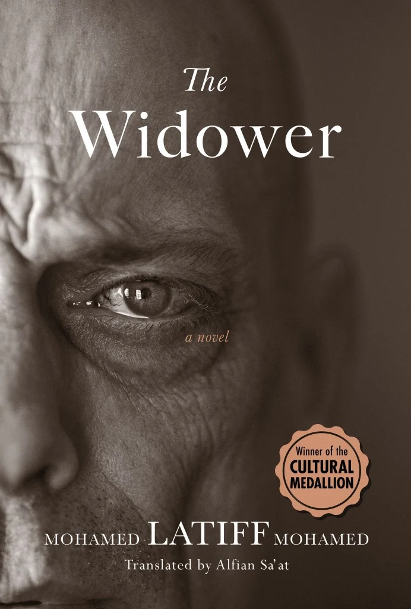
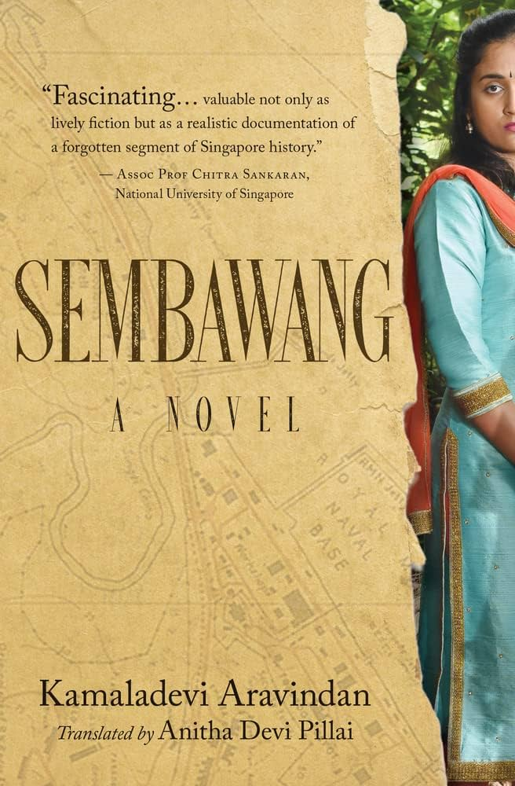
Refining the questions for my worksheet
Asking about how they feel about a certain time period (but which?)
By capturing textures (markings, etchings, mark-making), describe/depict your experience of time.
Compiling songs that remind them of a certain point in their lives
Looking back, all these questions seem to be more concerned with the idea of memory.
Overall feedback for all that
For the bibliography map, I was thankfully reading in the right direction! I could definitely explore more on the topic/theme of scent (from Byung-Chul Han). Shu Min also reccommended an interesting podcast, Radiolab, which touched on the topic of time—specifically the episode called "Time is Honey". She also advised me to not just look at similar readings, but also considering alternative point-of-views.
As for the plans, it would be good to go with testing the usability of old, alternative calendars on my classmates. Would people of today be receptive towards old, alternative timekeeping systems that have little or no connection to how time is kept today?
Collecting responses
Based on the feedback received, I quickly devised my worksheets. I chose the Balinese Pawukon Calendar (I had researched on this a little for my first presentation), the Turtle Shell calendar (I remember Shu Min had suggested looking into this in Year 2—its an interesting form of calendar) and the Jeremy Bearimy calendar from the TV show "The Good Place".
I passed the worksheets around to whoever was around. Many of them found the exercise difficult, and I noticed that they resorted to counting the "boxes" or "compartments", before falling back on the traditional system of the Gregorian Calendar to interpret the calendar.
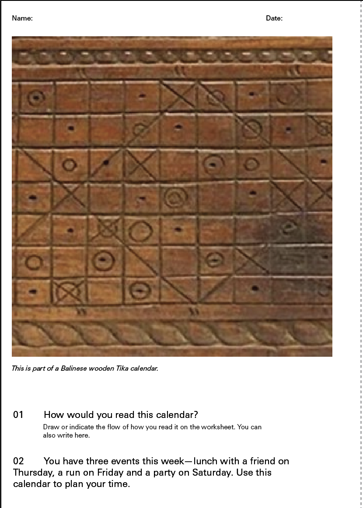
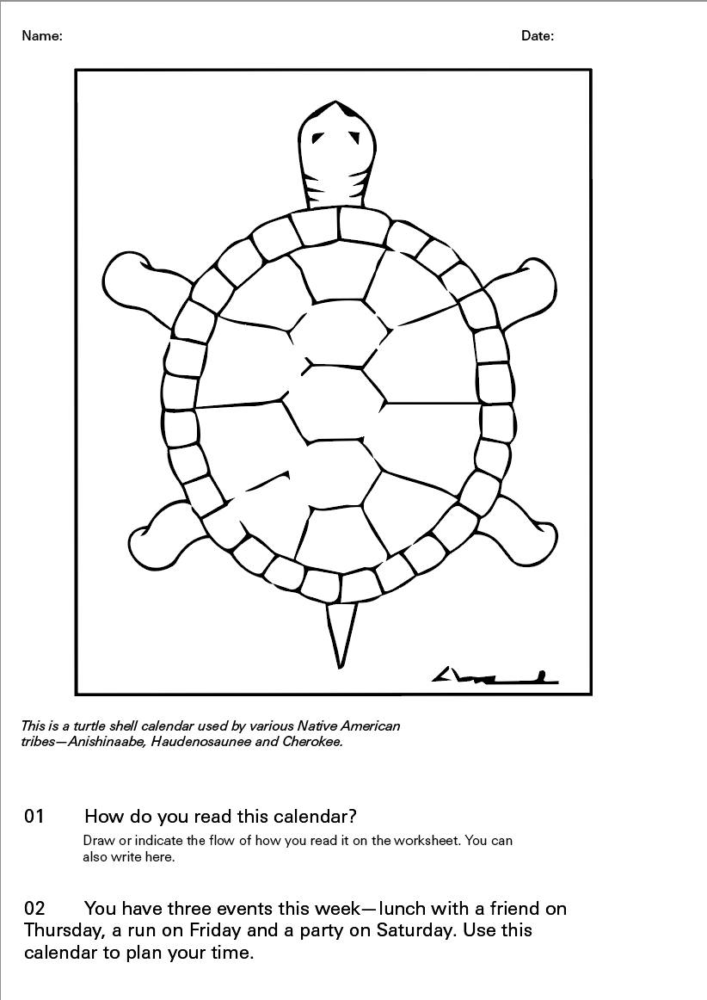
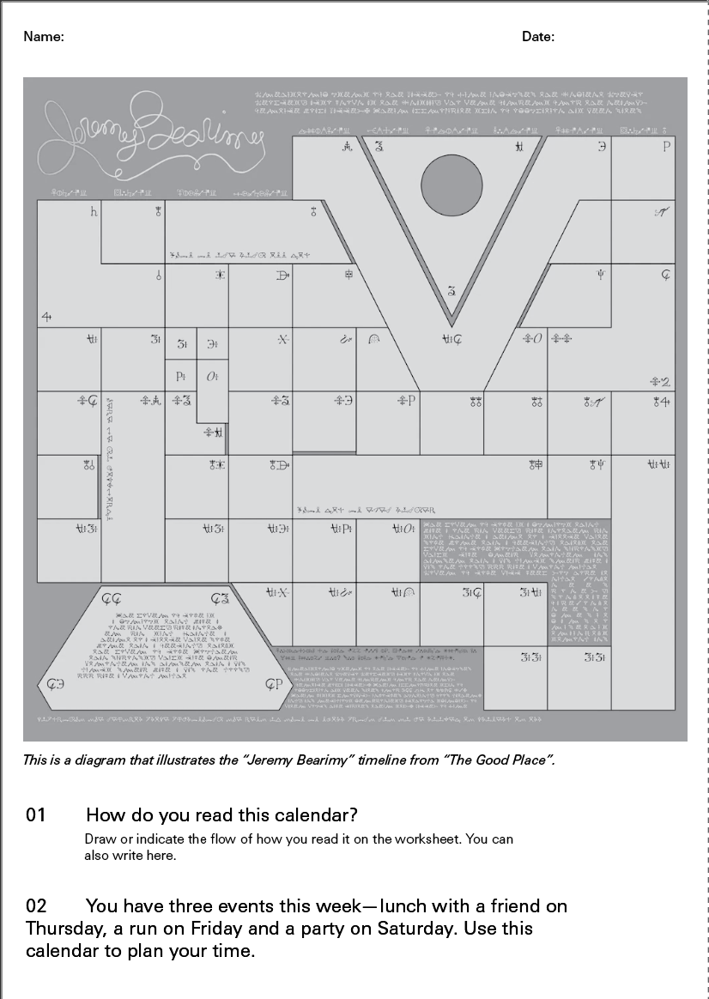
Responses from D301
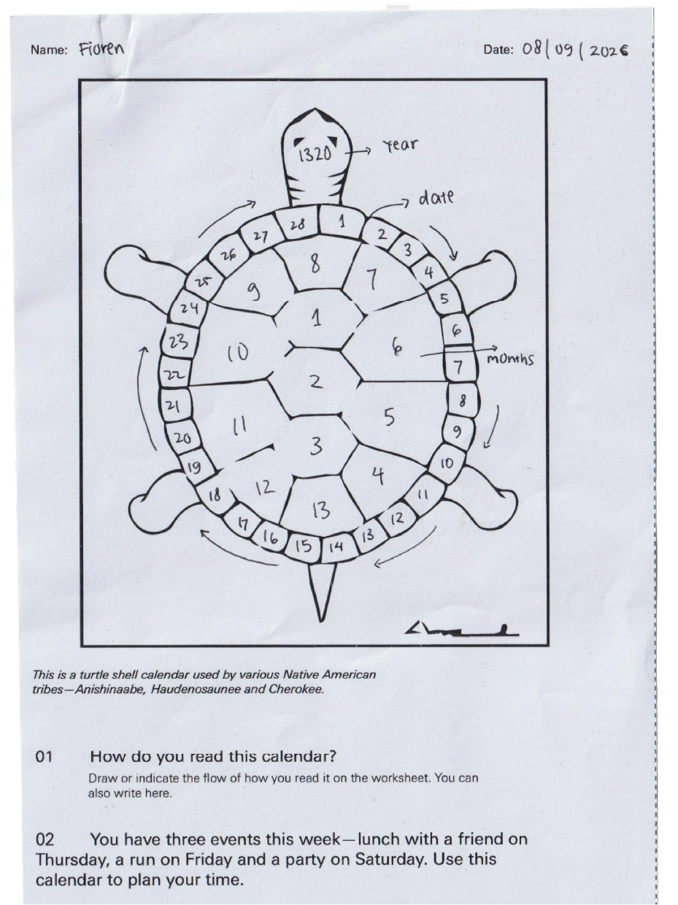
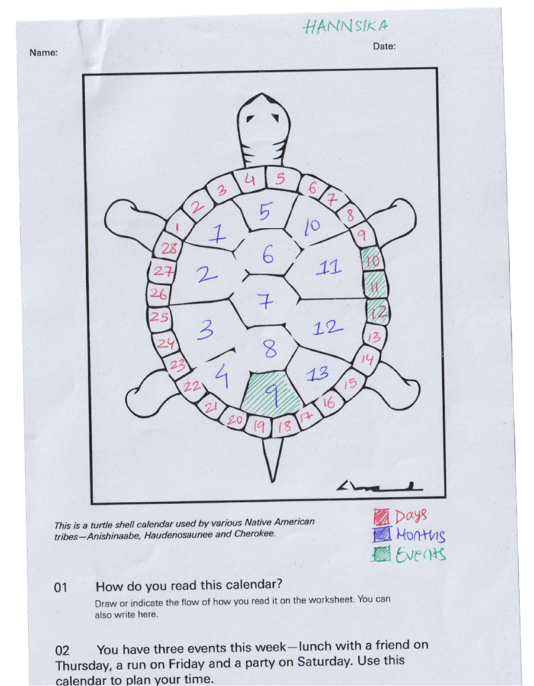
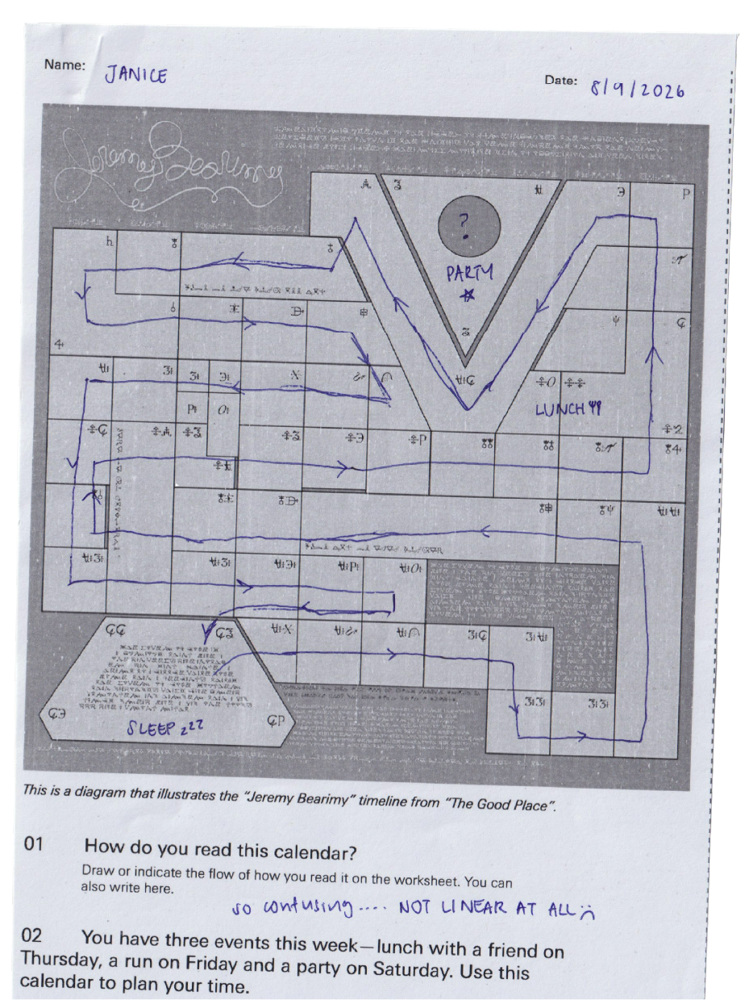
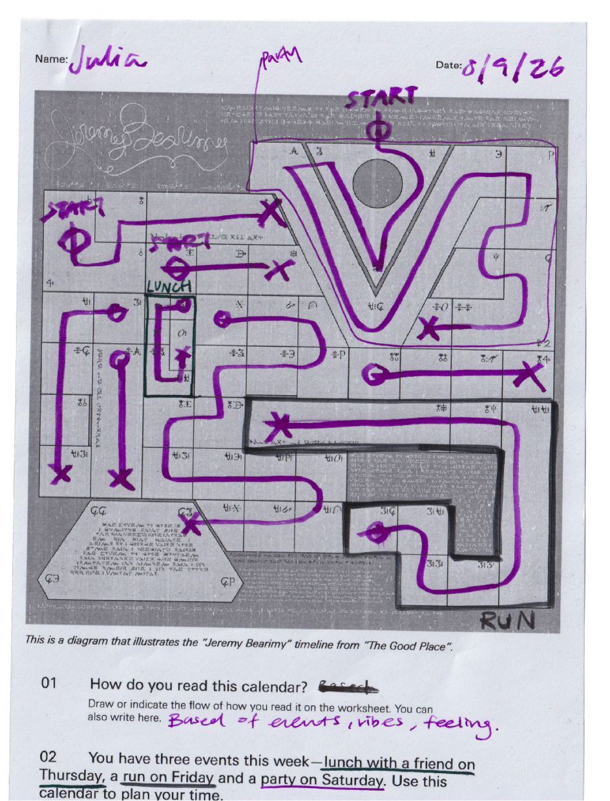
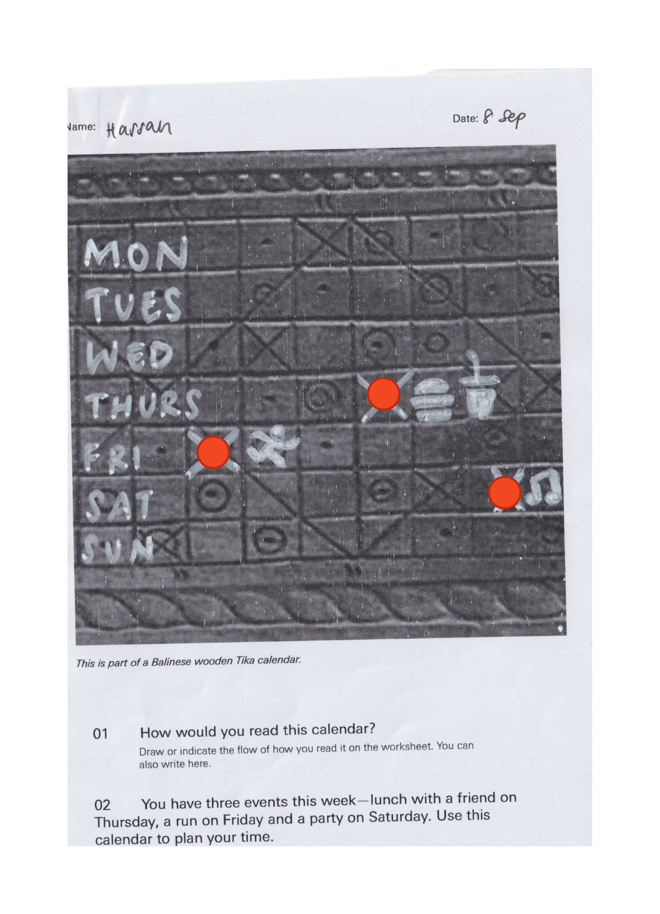
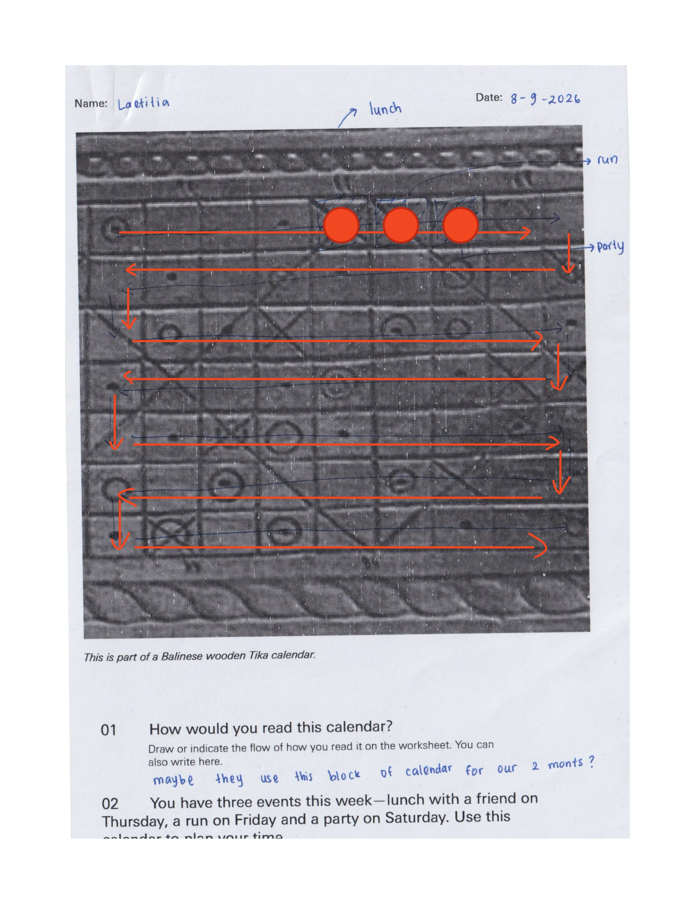
You can find more responses here (+ deeper analyses). I've picked a few of the responses here.
Lyrical Time: gathering lyrics
from songs
As an extension of the Literary Time experiment, I also gathered lyrics. Its a very common theme in songs, especially those that talk about lingering memories, or through the comparison of past and present. I tried to collect a mixture of both English and alternative languages (so far, only Chinese and Cantonese) but hopefully this collection will continue to grow! I printed the selected lyrics out, making sure to curate those that I thought described a certain moment or reflected on the passage of time.
Although it looks like a hefty collection of songs, I actually continued to update it as time went on, so for Week 4, let's pretend that it stopped at no.10 (Slipping Through My Fingers by ABBA).
"Time won't fly, its like
I'm paralysed by it."
One last minute edition
I decided to extend the Literary time experiment even more by adding sketches (visual interpretations) to the selected quotes.
The day of 50-ish experiements
Overall, I think our presentations went well! It was fun to see what we all collected and made. Shu Min found the visual interpretations of the literary quotes interesting...perhaps I could take this further (but honestly I don't know how far this can go..let's see!). My classmates were also leaning more towards the subjective perception of time, preferring the "How August feels like" experiment. They also found the song collecting exercise fun, and Charlotte even added a few songs — Time by Pink Floyd, Time after Time by Cyndi Lauper and In Another Time by Sade. (Thanks Charlotte!!)
Went to the Audemars Piguet Exhibition
This was a free (thankfully) exhibition at the National Musuem which brings AP's rarest watches to Singapore. I felt that it was a very insightful exhibition that focused a lot on the making and tinkering of watch mechanisms. This was insightful in that I learnt more about western timekeeping and tinkering, but not a lot about "felt time". But its alright, I went there in hopes that seeing all these expensive watches could give me some ideas! I met a docent who was very knowledgeable on timekeeping and told me about how in order to make everything ordered, we had to move forward 10 days in a day, with the calendar indicating that it is (for example) the 14th of October[1].
He also told me thats its funny that we rely on one system of timekeeping, which is greenwich mean time, and still refer to it today. its kind of like the lingering effects of colonialism as GB used to be the ruling naval power, but we still follow its system today. Especially for Singapore, whose time zone is specially calibrated to HK time to reap its economic benefits.
I also learnt more about the craft, AP works a lot on “open working” where wearers are able to see the gears of the clock moving, which was fun. They also had a type of watch called the chiming watch, where users at a point in time had to place their ear to the watch to hear the ticking. The most interesting thing I saw at the exhibition was the astronomical calculator thingy where people could crank and the planets would rotate nicely… it was so cool and there was even the western horoscope signs. One regret I had was not preparing any questions to ask the docents there.
The best part was that they also gave me a gift bag at the end of the exhibition (had to do a survey, of course). I opened the gift bag with bated breath. This could be my chance to get a private jet. Was it an AP watch? Alas, it was an exhibition catalogue.
He was probably referring to the time when the world switched from the Julian Calendar to the Gregorian Calendar. This happened because an inaccurate calculation in the Julian Calendar caused the world to drift away from its natural rhythms. Thus we "went back" in time by about a week.
Another crazy and busy week. We had to start preparing ideas for our catalogue next week, so I gotta get on that ASAP. I still want to explore different research pathways, but perhaps with relation to a singular research topic so I don't get too lost (⊙ _ ⊙ ) Unrelated, but looking at all these grainy photos of mine makes me want to invest in a camera. (should i??)